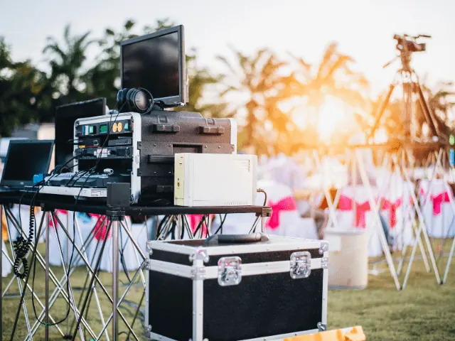
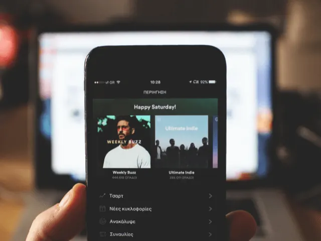

Partnerbijdrage
DJ of toch een playlist? Welke muziek past bij jou trouwdag
Gepubliceerd op 31 maart 2023, bijgewerkt op 26 februari 2024
Onderdeel van de gids Trouwen in Nijmegen

Een trouwdag is een van de belangrijkste dagen van je leven, en het kiezen van de juiste muziek kan het verschil maken tussen een goede en een geweldige bruiloft. We vergelijken twee opties om de muziek op je bruiloft te verzorgen: een DJ inhuren of zelf een playlist samenstellen. Beide opties hebben hun voor- en nadelen.
Wat zijn de voor- en nadelen van een DJ?
Een DJ inhuren heeft als voordeel dat je iemand hebt die de sfeer van de avond goed aanvoelt, en hierop kan inspelen. Een goede DJ weet precies welke nummers het publiek in beweging brengen en kan het feest naar een hoger niveau tillen. Daarnaast kan een DJ ook zorgen voor de juiste aankondigingen en eventueel verzoeknummers draaien. Het nadeel van een DJ is dat het vaak wat duurder is dan het zelf samenstellen van een playlist.
Wat zijn de voor- en nadelen van een eigen playlist?
Een playlist samenstellen heeft als voordeel dat het goedkoper is dan het inhuren van een DJ. Daarnaast heb je zelf de controle over welke nummers er gedraaid worden en kun je de muziek afstemmen op jullie persoonlijke smaak. Het nadeel is dat je niet weet hoe het publiek op de muziek gaat reageren. Het kan dus zijn dat de dansvloer leeg blijft als de gekozen nummers niet goed aanslaan bij het publiek.
Waar moet je aan denken bij het zelf samenstellen van een playlist?
Als je ervoor kiest om zelf een playlist samen te stellen, is het belangrijk om rekening te houden met de sfeer van de avond. Wil je een romantische sfeer creëren, kies dan voor rustige nummers. Wil je juist een feestelijke sfeer, kies dan voor nummers waarbij het publiek niet stil kan blijven staan. Daarnaast is het belangrijk om te kijken naar de leeftijd en de muzieksmaak van je gasten. Zorg ervoor dat er voor iedereen iets te horen is, maar vergeet ook niet om je eigen favoriete nummers toe te voegen.
Waar moet je rekening mee houden bij het kiezen van een DJ?
Als je ervoor kiest om een DJ in te huren, is het belangrijk om vooraf duidelijke afspraken te maken over de muziekkeuze. Geef bijvoorbeeld aan welke nummers je wilt horen en welke niet; geef ook aan wat de sfeer die je wilt creëren is. Een goede DJ zal hier rekening mee houden en zorgen voor een avond die nooit vergeten zal worden!

Waar in Nijmegen vind je een goede DJ?
We hebben een leuke lijst voor je samengesteld, met DJ’s die genoeg ervaring hebben, om jouw droom-dag, swingend door te brengen:
De Mobiele DJ – Muziekburo:
Maak uw volgende feest onvergetelijk met De Mobiele DJ – Muziekburo! Met zijn feilloze gevoel voor sfeer en gezelligheid, zorgt hij voor een onvergetelijke avond vol muzikale verrassingen en verzoekjes. Of u nu een borrel, tuinfeest, huwelijk of congres organiseert, De Mobiele DJ past zijn repertoire altijd aan op de smaak van uw gasten. En het beste van alles? Het draadloze systeem werkt op accustroom, wat betekent dat u geen stekkers nodig heeft. Geniet van de muziek en feest overal waar u maar wilt!
DJ Niels:
Maak van uw feest een feest van herkenning met DJ-Niels! Hij neemt u terug naar de jaren ’60, ’70 en ’80 met de nummers die u lang niet meer hebt gehoord op de radio. Uw gasten zijn meer dan welkom om verzoekjes in te dienen en op het podium te komen voor een gezellig praatje. DJ-Niels hecht veel waarde aan interactie met het publiek en maakt sfeervolle foto’s tijdens het feest, welke te zien zullen zijn op een groot scherm en na afloop kosteloos naar u worden gemaild. Maak uw feest onvergetelijk met DJ-Niels!
DJ DOA:
Laat uw feest tot leven komen met DJDoa! Met zijn jarenlange ervaring in het aanvoelen van zijn publiek, weet hij altijd de juiste sfeer te creëren, ongeacht de grootte van het feest. Van intiem tot grootschalig, DJDoa brengt altijd de juiste mix van muziekgenres om uw gasten in beweging te krijgen en te houden. Zijn energie en enthousiasme zijn aanstekelijk en zorgen ervoor dat jong en oud zich vermaken op de dansvloer. Waar nodig kan DJDoa zijn muziek ondersteunen met presentatie, sprekers of MC om uw feest compleet te maken. Boek DJDoa en laat uw gasten genieten van een onvergetelijke avond!

Conclusie
Kortom, zowel een DJ als een playlist hebben hun voor- en nadelen. Het hangt af van jullie persoonlijke voorkeur en budget. Als je ervoor kiest om zelf een playlist samen te stellen, zorg er dan voor dat je rekening houdt met de sfeer van de avond en de muzieksmaak van je gasten. Als je een DJ inhuurt, maak dan duidelijke afspraken over de muziekkeuze en de gewenste sfeer. Maar wat je ook kiest, zorg ervoor dat de muziek past bij jullie trouwdag en zorgt voor een onvergetelijke avond.